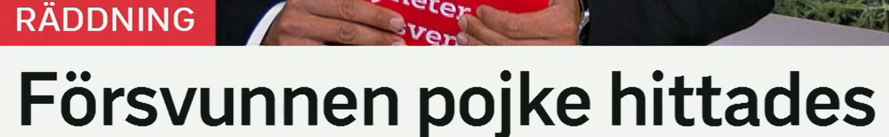
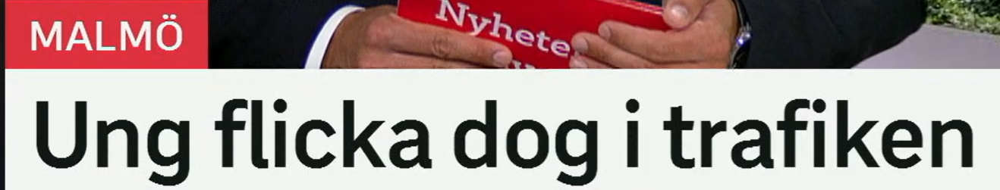
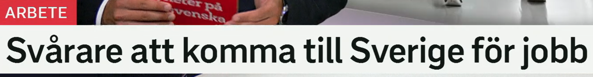
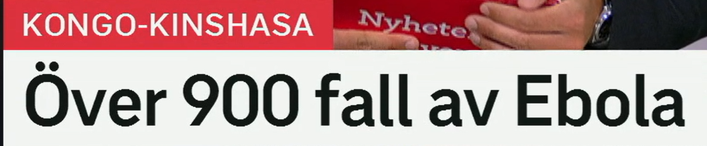
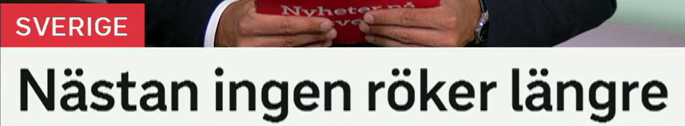

Försvunnen pojke hittades
失踪男孩被找到了。
来自动词 försvinna 消失、失踪。försvunnen 表示“失踪的”。相关词：försvinnande 失踪事件，saknad 失踪/被想念的。
En försvunnen kvinna söks av polisen. 警方正在寻找一名失踪女子。
en pojke 男孩；对比 en flicka 女孩，ett barn 孩子，en ungdom 青少年。
Pojken kom hem på kvällen. 男孩晚上回家了。
原形 hitta 找到；hittades = 被找到。新闻里常见：mannen hittades 男子被发现，spår hittades 发现线索。
Barnet hittades i skogen. 孩子在森林里被找到。
标题结构
Försvunnen X hittades = 失踪的 X 被找到了。完整句可说：Den försvunna pojken hittades.

Ung flicka dog i trafiken
一名年轻女孩在交通事故中死亡。
ung 年轻的；中性 ungt，复数/定形 unga。相关词：ungdom 青少年，ungdomar 年轻人。
Unga människor flyttar ofta till större städer. 年轻人常搬到更大的城市。
en flicka 女孩。对比：pojke 男孩，kvinna 女性，barn 孩子。
Flickan cyklade till skolan. 女孩骑车去学校。
原形 dö 死亡；过去式 dog，完成式 dött。名词：död 死亡，dödsfall 死亡病例。
Två personer dog i olyckan. 两人在事故中死亡。
trafik 交通；i trafiken 在交通中/交通事故语境。相关词：trafikolycka 交通事故，väg 道路，förare 驾驶员。
Fler skadas i trafiken under vintern. 冬季有更多人在交通中受伤。
地点语境
dog i trafiken 常可译成“死于交通事故/在交通中死亡”，比逐词翻译更自然。

Svårare att komma till Sverige för jobb
为了工作来到瑞典变得更难。
来自 svår 难的；比较级 svårare 更难，最高级 svårast 最难。反义词是 lätt 容易的。
Det blir svårare att hitta bostad. 找住房变得更难。
komma till 到达、来到；att 引出动词原形。类似：att flytta till Sverige 搬到瑞典，att resa till Sverige 前往瑞典。
Hon vill komma till Sverige för att studera. 她想来瑞典学习。
för 可表示目的：“为了”。ett jobb 工作；相关词：arbete 工作，arbetstillstånd 工作许可，arbetskraft 劳动力。
Många söker arbetstillstånd för jobb i Sverige. 许多人为了在瑞典工作申请工作许可。
比较级标题
Svårare att + 动词 = 做某事更难。完整句可写：Det blir svårare att komma till Sverige för jobb.

Över 900 fall av Ebola
超过 900 例埃博拉病例。
över 在数字前表示“超过”。对比：under 少于，nästan 几乎，drygt 略多于，knappt 不到。
Över 900 personer deltog i mötet. 超过 900 人参加了会议。
ett fall 可指病例、案件、情况；复数也是 fall。搭配：nya fall 新病例，bekräftade fall 确诊病例。
Myndigheterna rapporterar nya fall. 当局报告新增病例。
av 在这里表示“……的病例”。疾病词：smitta 感染，utbrott 暴发，vaccin 疫苗，sjukdom 疾病。
Antalet fall av influensa ökar. 流感病例数量上升。
病例标题
Över X fall av Y = 超过 X 例 Y。新闻里可替换成 fall av mässling 麻疹病例、fall av covid 新冠病例。

Nästan ingen röker längre
几乎没人再吸烟了。
nästan 几乎；ingen 没有人/没有一个。对比：nästan alla 几乎所有人，få 少数，många 许多。
Nästan ingen kom till mötet. 几乎没人来开会。
原形 röka 吸烟；名词 rökning 吸烟，rökare 吸烟者，rökfri 无烟的。
Färre unga röker i dag. 如今年轻吸烟者更少。
在否定句里 inte ... längre 表示“不再……”。这里 ingen röker längre = 没人再吸烟。
Hon röker inte längre. 她不再吸烟了。
趋势表达
Nästan ingen + 动词 + längre = 几乎没人再做某事。比如：Nästan ingen betalar kontant längre. 几乎没人再付现金。
复习表：从标题词扩到词汇组
| 关键词 | 延伸词汇 | 记忆角度 |
|---|---|---|
| försvinna | försvunnen, försvinnande, saknad, söka | 失踪与寻找 |
| hitta | hittades, hittats, fynd, spår | 发现与被发现 |
| trafik | trafikolycka, förare, väg, skadas, dödsfall | 交通事故 |
| svår | svårare, svårast, svårt, lättare | 比较级 |
| fall | nya fall, bekräftade fall, fall av Ebola, utbrott | 病例/案件 |
| röka | rökning, rökare, rökfri, sluta röka | 吸烟与健康 |
练习 1
把“失踪女子被找到了”译成瑞典语。提示：Försvunnen kvinna hittades.
练习 2
用 svårare att 说“找到工作更难”。提示：Svårare att hitta jobb.
练习 3
把“超过 100 个病例”译成瑞典语。提示：över 100 fall
练习 4
说“她不再吸烟了”。提示：Hon röker inte längre.